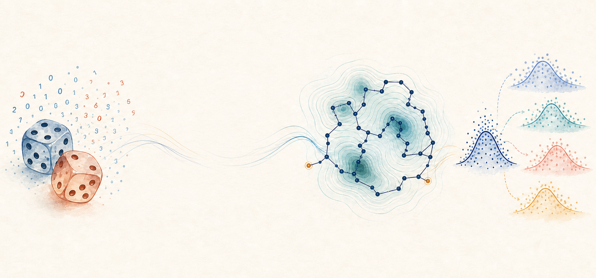

STAT3003: Fundamentals of Statistical Algorithm
Course overview
This course introduces the fundamental ideas and computational tools behind modern statistical algorithms. Topics include random-variable generation, Monte Carlo methods, optimization, Markov chain Monte Carlo, and bootstrap methods.

Course materials
Course materials will be continuously updated throughout the course.
Syllabus
Lecture 1.1: Random Variable Generation (1)
Course schedule
2026 Fall · Tuesdays 14:00–15:35
| Week | Date | Planned topics | Slides / module | Assignment |
|---|---|---|---|---|
| 1 | Sep 1 | Course introduction; random-number generation; inverse transform method | 0-syllabus; 1.1 | |
| 2 | Sep 8 | Inverse transform method; acceptance–rejection algorithm | 1.1 | |
| 3 | Sep 15 | Mixture models; special transformations; copula models | 1.2 | Assignment 1 released |
| 4 | Sep 22 | Monte Carlo integration; variance and efficiency | 2.1 | Assignment 1 due |
| 5 | Sep 29 | Monte Carlo statistical inference: parameter estimation and hypothesis testing | 2.2 | |
| 6 | Oct 10 | Variance reduction: antithetic variables, control variates, and more | 2.3 | Assignment 2 released |
| 7 | Oct 13 | Variance reduction: importance sampling, stratified sampling, and more | 2.3 | Assignment 2 due |
| 8 | Oct 20 | MCMC: Markov-chain foundations; Metropolis–Hastings algorithm | 2.4 | |
| 9 | Oct 27 | Gibbs sampling, convergence diagnostics, and MCMC applications | 2.4 | Assignment 3 released |
| 10 | Nov 3 | Bisection method; Newton’s method | 3.1 | Assignment 3 due |
| 11 | Nov 10 | Fisher scoring; gradient descent | 3.1 | |
| 12 | Nov 17 | Gradient descent; coordinate descent | 3.2 | Assignment 4 released |
| 13 | Nov 24 | EM algorithm | 3.2 | Assignment 4 due |
| 14 | Dec 1 | EM algorithm | 3.2 | |
| 15 | Dec 8 | MM algorithm; ADMM algorithm | 3.3 | Assignment 5 released |
| 16 | Dec 15 | ADMM algorithm | 3.3 | Assignment 5 due |
| 17 | Dec 22 | Bootstrap: bias and standard-error estimation | 4 | |
| 18 | Dec 29 | Bootstrap confidence intervals; cross-validation; course review | 4 | Assignment 6 released |
| Post-course | Jan 5, 2027 | Assignment 6 due |